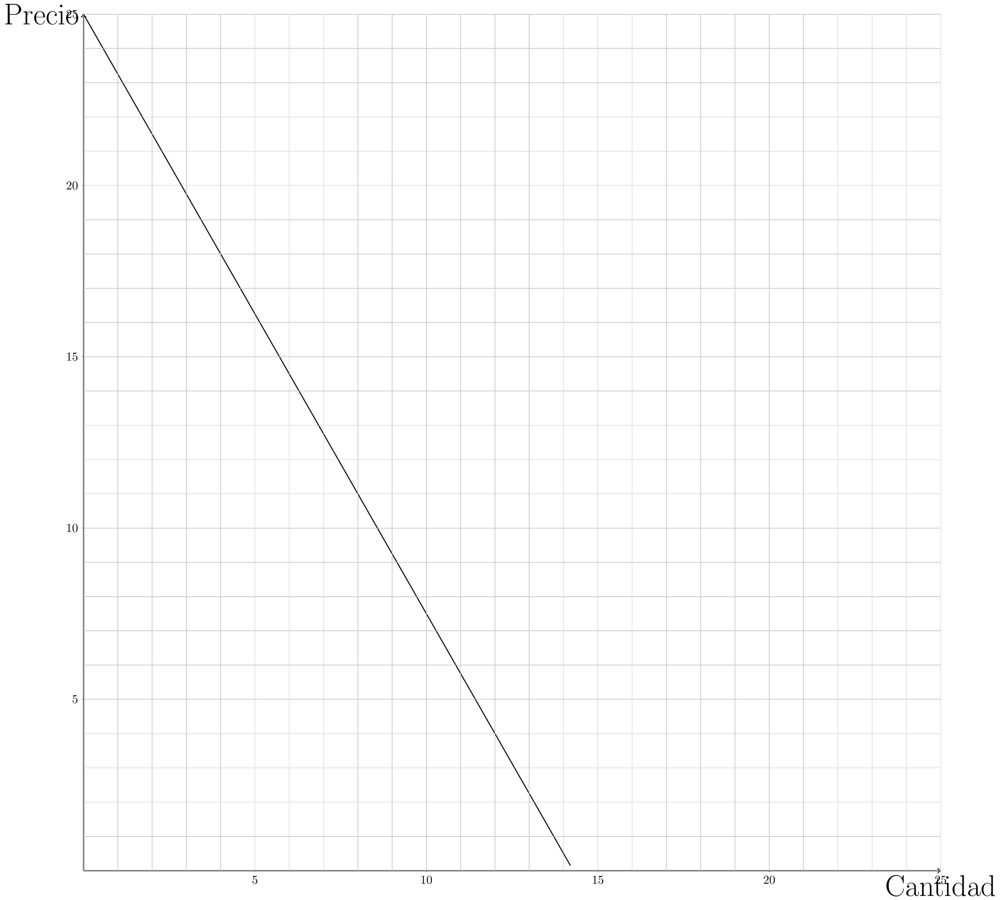
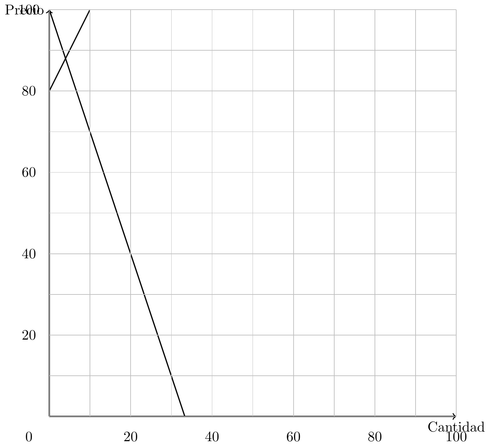
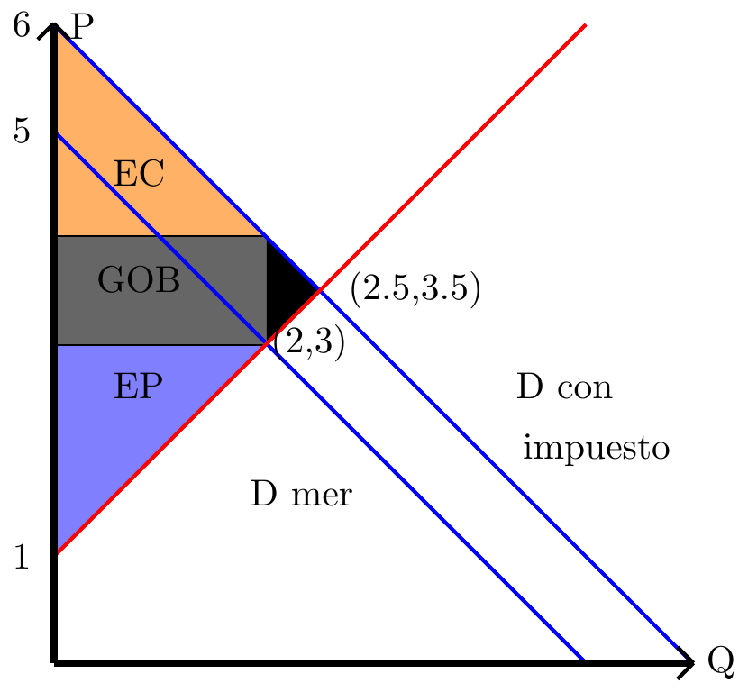
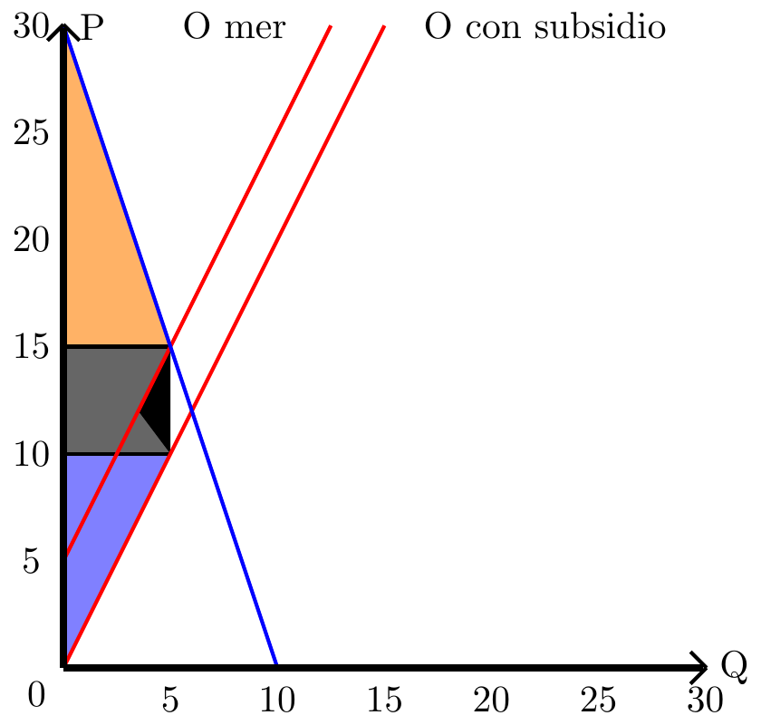
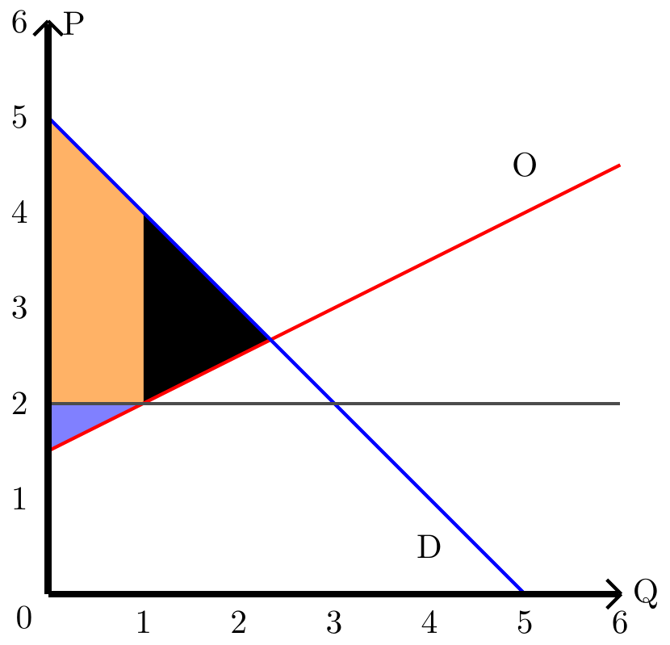
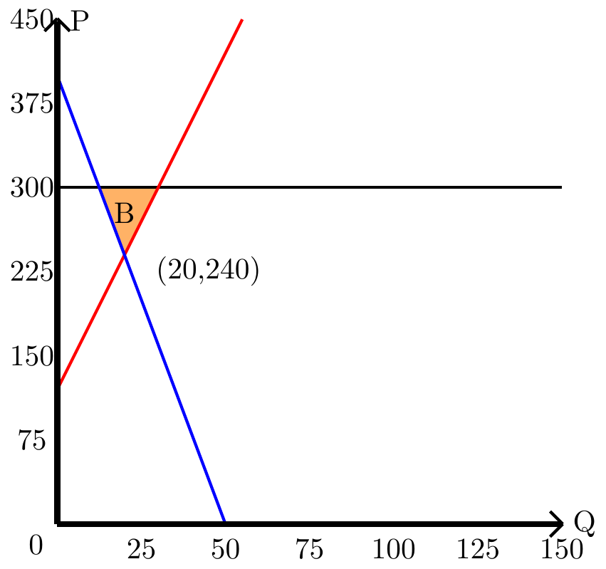
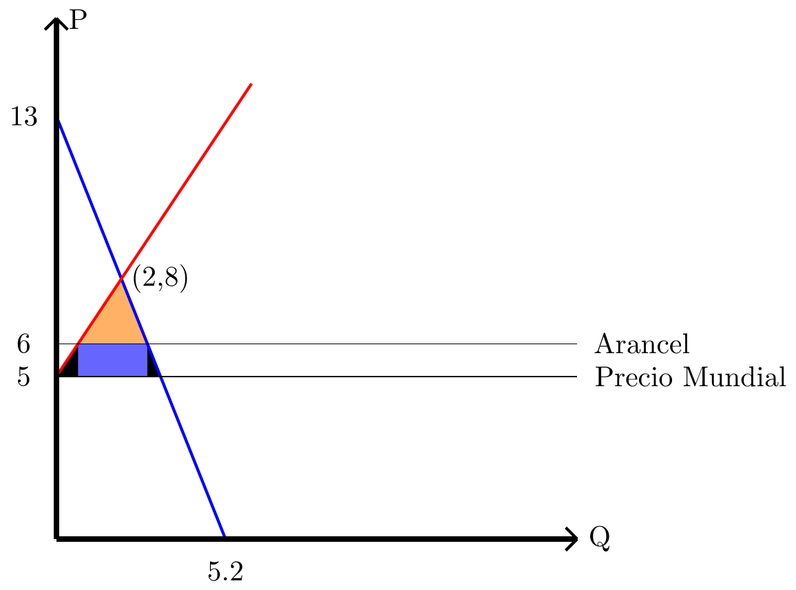

8 Ejercicios Pauta:
8.1 Sobre capítulo I:
8.1.1 :
- A causa de las constantes enfermedades pulmonares y riesgos para la salud, el gobierno decide aumentar el impuesto al tabaco. Como consecuencia de esto, un 37% de los fumadores deja este vicio y hay un 45% menos de enfermedades relacionadas al uso de esta ¿Qué principio esta relacionado con este cambio económico?
- Dado que bajaron las enfermedades y que el estado logró recaudar más dinero por el aumento del impuesto anterior, el gobierno decide aumentar más aún el impuesto a este bien de consumo. Esta vez, aumento el mercado negro de este servicio y junto a esto, el estado recaudó menos y por la mala calidad del tabaco traficado aumento un %15 las enfermedades relacionadas a este habito. ¿Qué principio es el que esta relacionado con este nuevo cambió?
- Ahora, un comprador cualquiera de cigarrillos al ver que subieron los impuestos, tiene que decidir entre comprar una cajetilla o comprar la revista que compra todos los domingos ¿Que principio es el que se relaciona a esta situación?
RESPUESTA:
- “En ocasiones, el gobierno puede mejorar los resultados del mercado.” Ya que, al eliminar una externalidad negativa (un efecto negativo del mercado hacia la sociedad) está dando buenos resultados en el mercado. Dicho de otra forma, está mejorando la distribución de los bienes.
- “Normalmente, los mercados son un buen mecanismo de asignación de recursos.” Al empeorar la situación sanitaria de la sociedad, a a través, de la intervención estatal, podemos concluir que en este caso, era mejor que el mercado no se intrevenga más.
- En este caso, los principios 1,2 hacen efecto en este evento, y dependiendo del caso, el 4 también hace efecto. Para el primer principio el comprador tiene que decidir entre una cosas o otra, para el segundo tendrá que renunciar a una de las dos y para el cuarto en el caso que escoja la revista, el impuesto dado es un incentivo que afecta el mercado.
8.1.2 :
Con respecto al modelo de economía circular. 1) ¿Qué demandan los hogares? 2) ¿Qué demandan las empresas? 3) ¿Qué ofrecen los hogares? 4) ¿Qué ofrecen las empresas?
RESPUESTA:
Al demandar, decimos que este agente es el que quiere el bien o servicio. Por otro lado, al ofrecer, decimos que el agente es el dueño de este y que lo esta ofreciendo a cambio de algo.
- Los hogares demandan bienes y servicios.
- La empresa demanda factores de producción, es decir, trabajo, capital, tierra y tecnología.
- los hogares ofrecen factores de producción.
- las empresas ofrecen bienes y servicios.
8.1.3 :
Tenemos que un pastelero tiene como insumo limitante 100 huevos, para hacer un pie de limón gasta 10 huevos, mientras que para hacer un kg de pan gasta 5 huevos. 1) si quiere hacer 3 pie de limón, cuanto es la máxima cantidad de pan que puede hacer. 2) exprese la situación en la forma matemática \(\bar x=a_1y_1+a_2y_2\). 3) Haga un gráfico de la situación. 4) Ahora, digamos que le llegaron más huevos y le alcanzó para hacer 15 pie de limón y 15 kg de pan, cuantos huevos más tiene.
RESPUESTA:
- Podemos expresar esto como:
\[ 100=3\cdot 10 +5 \cdot x \]
Donde “\(x\)” será la cantidad de pan. Resolviendo:
\[ 100-30= 5 \cdot x \] \[ 70/5= x \] \[ 14= x \]
Se podrán hacer 14Kg de pan. 2) Esto lo podemos expresar como:
\[ 100=10\cdot y_1+ 5\cdot y_2 \]
Donde “\(y_1\)” son la cantidad de pie de limón y “\(y_2\)” la cantidad de huevo. 3) Calculando la máxima cantidad de pan y pies que se pueden hacer podemos decir que el máximo de pan es \(20\) y de pies son \(10\). El gráfico resulta:
- Modelamos la ecuación, recuerde que dice cuantos huevos más tenemos, por lo que el resultado de la cantidad de huevos totales habrá que restarle los 100 iniciales. \[ \bar x=10\cdot 15+ 5\cdot 15 \] \[ \bar x=150+ 75 \] \[ \bar x=225 \]
Ahora, a este resultado le restaremos los \(100\) huevos iniciales.
\[ \text{huevos agregados}=225-100 \] \[ \text{huevos agregados}=125 \]
8.1.4 :
Un productor “\(A\)” de chocolate tiene como factor limitante el cacao, si quiere producir chocolate dulce necesita “\(c\)” de este bien por cada kg y si quiere producir chocolate amargo necesita “\(d\)” de este bien por cada kg. Para gastar todo su cacao necesita producir “\(e\)” kg de chocolate dulce y “\(f\)” de chocolate amargo.
- Haga la ecuación que represente kas FPP.
RESPUESTA
Primero definimos \(y_1\) es el chocolate dulce, y el amargo es \(y_2\), luego: \[ \bar{x}=cy_1+dy_2 \]
Por la segunda parte del enunciado tenemos que: \[ \bar{x}=ec+df \]
Finalmente: \[ ec+df=cy_1+dy_2 \]
- Haga el gráfico de esta ecuación.
RESPUESTA

8.2 Sobre capítulo II:
8.2.1 :
- Calcule el precio Demandado (\(P\)) de un bien para una producción de 5 unidades (\(Q=5\)). Usted sabe que si no se producen unidades el precio demandado es de $5000. Adicionalmente, usted sabe que la función de demanda es lineal de la forma: \[P(Q)=a-250Q\]
RESPUESTA
Tenemos que en el caso \(Q=0\) el valor de \(P(Q)=a=5000\), entonces con esto tenemos la función:
\[ P(Q)=5000-250Q \]
Ahora evaluamos \(P(5)\) y esto nos da: \[ P(5)=5000-250\cdot 5 \] \[ P(5)=5000-1250 \] \[ P(5)=3750 \]
- Calcule la función inversa de demanda para \(P(Q)=a-bQ\)
RESPUESTA
La función inversa de la demanda es la función inversa de \(Q(P)\), por lo que la función inversa de \(P(Q)=ab-bQ\) es esta misma.
- Asuma una función de demanda igual a \(P(Q)=a-235Q\). Si Usted sabe que 10 unidades se valoran a un precio de 7650, ¿Cuál sería el precio de referencia si no se produce nada?
RESPUESTA
El precio de referencia cuando no se produce nada es en este caso el valor de ``\(a\)’’, para calcularlo tenemos que plantear la ecuación del enunciado:
\[ 7650=a-235\cdot 10 \] \[ 7650=a-2350 \]
\[ 7650+2350=a \] \[ a=10000 \]
Es decir el precio de referencia es equivalente a $10.000.
8.2.2 :
Grafique las siguientes demandas:
- \[ P(Q)=\$10 - 1Q \]
- \[ P(Q)=\$12 - 2Q \]
- \[ P(Q)=\$50 - 2.5Q \]

8.2.3 :
Calcule la función demanda de los siguiente gráficos. 1)
\[ P(Q)=5-0.2Q \]
\[ P(Q)=20-3Q \]
\[ P(Q)=10-2Q \]
8.2.4 :
Tenemos una empresa forestal con las siguientes funciones de demanda y oferta: \[ P_d(Q)=100-3Q \] \[ P_o(Q)=60+2Q \]
Por causas naturales una de los cultivos se incendiaron, dejando como nuevo punto de equilibrio \((4,88)\). Haga un gráfico del caso luego del evento y calcule la elasticidad.
RESPUESTA
Primero calculamos el punto de equilibrio inicial:
\[ 100-3Q=60+2Q \] \[ 40=5Q \] \[ 8 \]
Reemplazamos en \(P(Q)\): \[ P(8)=100-3\cdot 8 \]
\[ P = 76 \]
Entonces el punto inicial es \((8,76)\). Además, al ser un evento que le afecta a la oferta, ya que, los que demandan demandan lo mismo, pero los que ofrecen, ofrecen menos, tendremos un cambio en la curva de demanda.
Ahora calcularemos la nueva oferta:
\[ 88=a+2\cdot 4 \]
\[ 88=a+8 \Leftrightarrow a=80 \]
\[ P_o(Q)=80+2Q \]
Finalmente hacemos el gráfico:

Ahora calcularemos la elasticidad:
Recordemos que la elasticidad es:
\[ \in =\left|\dfrac{\triangle\%Q}{\triangle\%P} \right| \]
Entonces tenemos: \[ \in=\left|\frac{88-76}{8-4} \right| \] \[ \in=\left|\frac{12}{4} \right| \] \[ \in=3 \]
De esto podemos decir que es elástica.
8.3 Sobre el capítulo III:
8.3.1 :
Una empresa de dulces tiene como función de oferta: \(P(Q)=1+Q\) Y como función de demanda: \(P(Q)=5-Q\), se le agrega un impuesto al productor de $1, calcule su peso muerto, el excedente al consumidor, lo recaudado por el gobierno y haga un gráfico de la situación.
RESPUESTA
Primero hacemos el gráfico:

Calculamos las áreas y nos dará que el peso muerto es \(0.5\), el excedente del consumidor es \(2\) y que lo recaudado por el gobierno es \(2\).
8.3.2 :
Tenemos una empresa de computadores con función de demanda \(P_d(Q)=30-3Q\) y de oferta \(P(Q)=5+2Q\), debido a la pandemia se hace un subsidio de $6 a los estudiantes para que puedan conectarse a sus clases. Haga un gráfico de la situación y calcule el excedente del productor y del consumidor.
RESPUESTA

Como los exedentes son triangulares, calulamos el exedente a base de su forma: \[ \frac{bh}{2} \]
El exedente del consumidor resulta \(37.5\) y el del productor \(25\).
8.3.3 :
Argentina por razones populistas, antes de las elecciones decidido fijar los precios de algunos bienes. A base de esto en un pueblo imaginario tiene el mercado del queso como funciones de oferta y demanda respectivamente \(P(Q)=1.5+0.5Q\) y \(Q(P)=5-P\). La fijación al precio máximo de este bien es de $2. ¿Qué fenómeno ocurrirá debido a esta intervención? Haga un gráfico de la situación.
RESPUESTA
La función de demanda inversa es \(P(Q)=5-Q\). Además, ocurrirá un escasez y el gráfico es el siguiente:

Donde el área negra es la escasez.
8.3.4 :
China tiene un mercado de chips con las siguientes funciones de oferta y demanda, con \(P\) en dolares: \[ P(Q)=120+6Q \, Q(P)=50-0.125P \]
Si el precio mundial es de $300 y este país decide exportar ¿Cuanto es lo que tendrá de beneficio este país en dolares por la exportación. Grafíque la situación.
RESPUESTA:
Primero, graficaremos:

Luego calculamos el beneficio que esta dado por un triangulo:
\[ \frac{60\cdot 140/3}{2}=\$1400 \]
8.3.5 :
El merado se zapatos en chile esta dado por las funciones de oferta y demanda en dolares y unidades: \[ \begin{array}{cc}P(Q)=5+1.5Q, & Q(P)=5.2-\frac{2}{5}P\\\end{array} \]
Además, el precio mundial de estos zapatos es de $5 por unidad y se tiene un arancel de $1.
Grafique la situación, calcule el excedente del productor local, el peso muerto y prediga que pasaría para los consumidores y productores locales si se quita este arancel.
RESPUESTA:
Primero calulamos la demanda inversa:
\[ Q(P)=5.2-\frac{2}{5}P \longleftrightarrow P(Q)=13-2.5Q \]
Luego, hacemos el gráfico:

Donde el área negra es el peso muerto, la naranja es el beneficio del importador y el área azul es el arancel.
Si quitamos el arancel, los consumidores podrán comprar más barato, pero los productores quebraran por no tener ningún excedente.